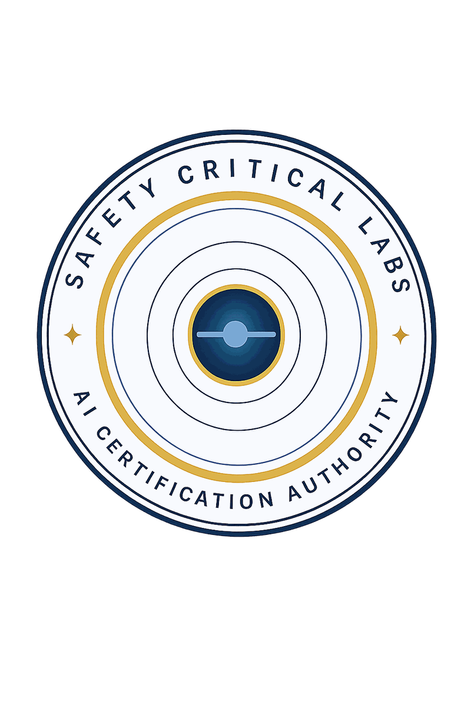

The mark, and who may use it.
An SCL certification mark states that one named AI system was assessed against one named version of a published standard and met the requirements that applied to it. That is all it says, and it only keeps saying it if the rules below are followed. This page sets out who owns the SCL name and seal, who may display the certification mark, in what wording, and for how long.
Three marks, three meanings
Safety Critical Labs uses three distinct marks. They mean different things, they are governed by different rules, and one is never a substitute for another.
The name. Safety Critical Labs, and the abbreviation SCL. This identifies the organization. It says nothing about any system.
The seal. The circular SCL device carrying the words Safety Critical Labs and AI Certification Authority. This is the corporate identity of the certification body. It appears on SCL's own documents and on the certificate itself as the issuing authority. The seal is not a certification claim. Its presence on a document means SCL published that document. It does not mean anything on that document was assessed.

The certification mark. SCL Certified. This is the only mark that carries a conformity meaning, and the only mark a party outside SCL will ever be authorized to display. It is issued to the holder of a valid certificate, for the specific system recorded on that certificate, and it is accompanied by the certificate number and a link to the public register.
A common error worth naming in advance: placing the seal on a product page and expecting it to read as certification. It will not be read that way by anyone who checks, and it is a prohibited use under section 10.
Status and ownership of the marks
The SCL name, the SCL seal, and the SCL Certified certification mark are unregistered marks owned by Safety Critical Labs. They are designated with the TM symbol. None of them is registered. No SCL mark carries the registered symbol, and nothing on this site, in any SCL document, or in any authorized use by a certificate holder may describe an SCL mark as a registered trademark.
Rights in an unregistered mark arise from use. Safety Critical Labs has used these marks in connection with its certification and assurance services since March 2026 and asserts ownership on that basis.
Registration status changes nothing about what this page governs. The question this page answers is what a display of the SCL Certified mark tells a reader, and that is settled by SCL's own rules and by the public register at /verify, not by the state of any filing. A certificate is either in the register or it is not.
Who may use which mark
Safety Critical Labs uses all three marks in its own materials, on its own documents, and on certificates it issues.
A certificate holder may use the SCL Certified certification mark, and the badge artwork issued with the certificate, for the system named on that certificate, for as long as that certificate is valid, and only in the wording section 05 requires. A certificate holder may not use the SCL seal, and may not use the SCL name in any way section 10 prohibits.
Everyone else may refer to Safety Critical Labs by name in ordinary descriptive writing, and may cite the AI Requirements Framework under its license as section 09 sets out. No other use of any SCL mark is permitted without written authorization from SCL.
That is the whole permission structure. There is no implied license, no fair use of the certification mark, and no category of use that becomes acceptable because it is small, internal, or temporary.
Why these rules exist
A certification mark is worth exactly what a reader can infer from it. If the mark appears on a system that was assessed, at the version that was assessed, within the scope that was assessed, then a reader who sees it learns something real without having to take anyone's word for it. If the mark also appears on a system that was retrained last month, or on a company rather than a system, or on a claim broader than what was actually granted, then the reader learns nothing from it and has to check every instance individually. At that point the mark has stopped working, and it has stopped working for the holders who followed the rules as much as for the one who did not.
This is not a branding concern. The rules below exist because the mark's meaning is the product, and that meaning is fragile in a way a logo is not.
What a certification claim has to say
This section governs holders. An SCL certification claim is not a logo placement; it is a sentence with required content. Five things pin the claim to reality, and a claim missing any of them is not an authorized use of the mark.
- 1. The system, by name and version. Certification attaches to a system, never to an organization, a team, a product line, or a model family. Name the system as it is named on the certificate, including the version or configuration identifier recorded there.
- 2. The framework version. The AI Requirements Framework is versioned, and its requirement sets change between versions. A claim that does not name the version is not checkable. Write the version as it appears on the certificate, for example v3.6.
- 3. The classification tier. The tier decides which requirement sets applied to the assessment. The three tiers are Safety Critical, Mission Critical and Operational Support, and they are not interchangeable. Naming a higher tier than the one assessed is a false claim, not a rounding error.
- 4. The certificate number. Every certificate carries a number in the form SCL-CERT-YYYY-NNN. Display it with the claim.
- 5. A working link to verification. The claim must link to the SCL register at safetycriticallabs.com/verify so that any reader can check it in one click. A claim without a live verification link is not an authorized use of the mark, however accurate the rest of it is.
A correct claim reads like this:
These are not correct claims:
- "SCL Certified." Nothing is pinned. This says nothing and is not permitted.
- "Acme Robotics is SCL Certified." Certification attaches to a system, not a company. SCL does not certify organizations.
- "Our models are SCL Certified." Plural and unversioned. One system was assessed; the others were not.
- "SCL Certified, Safety Critical." Where the certificate says Mission Critical, this overstates the tier and is a false claim.
- "SCL Certified (AI-5, AI-7, AI-11)." Certification is a determination across the applicable requirement sets for the tier, not a menu. Partial conformance is not certification and may not be described using the mark.
- "SCL certification pending." There is no such status. See section 07.
- "SCL assessed." SCL does not license this wording. Use the exact term granted, or none.
On the readiness assessment. The self assessment at /assess produces a score for the operator's own use. It is not an assessment by SCL, it confers no status, and its result may not be described using any SCL mark or any wording resembling one.
Where the mark may appear
A holder may display the SCL Certified mark and the issued badge:
- In the README of the repository containing the certified system
- On the model card of the certified system, on Hugging Face or an equivalent platform
- In technical documentation for the certified system
- On the holder's own website, in connection with the certified system
- In marketing materials, where the mark sits alongside the specific certified system and version and not alongside the organization generally
- In a response to a procurement questionnaire or a regulatory filing, where the full claim under section 05 is reproduced
In every one of these, the mark travels with the claim. The five required elements in section 05 are not optional in constrained placements. If there is no room for them, there is no room for the mark.
Where the mark may not appear
The following are prohibited, and each is grounds for suspension or revocation of the certificate:
- On the organization rather than the system. No SCL mark on letterhead, business cards, email signatures, vehicles, uniforms, office signage, investor materials, or general corporate advertising. The mark certifies a thing, not a company.
- On any system, version or configuration not named on the certificate. This includes a later release of the same system. A version that was not assessed was not certified.
- On a derivative. A model that has been retrained, fine tuned, quantized, distilled, pruned, or otherwise modified from the certified artifact is a different system and requires its own assessment. The mark does not travel to it.
- Outside the certified scope. Every certificate records an Operational Claim and an Operational Design Domain. Displaying the mark in connection with a use outside that scope claims something that was never assessed.
- Before certification is granted. No use during assessment, and no "certification pending", "in assessment", "undergoing SCL certification", "SCL certification expected" or equivalent. There is no pending state that carries the mark.
- After the certificate stops being current. See section 08.
- Modified. The badge may be scaled for display. Colors, text, proportions and design elements may not be altered, and no element of the badge may be recomposed, recolored, or rebuilt.
- Without a working verification link. A broken or removed link makes the display prohibited from the moment it breaks.
- Implying more than a determination. No wording, placement or design that suggests the mark is a regulatory approval, a safety endorsement, a warranty, a guarantee of performance, or an SCL endorsement of the holder, the holder's organization, or the holder's personnel. What a certificate does and does not say is set out at /disclaimer.
- Next to a self declared claim. Do not place a self assessment, an internal audit result, or an unverified conformance statement adjacent to the SCL mark where a reader could take SCL to have assessed it.
- Transferred. Mark rights are not assignable. A holder may not extend them to a customer, a reseller, an integrator, a subsidiary, or a party that embeds the certified system in its own product.
- The seal in place of the certification mark. The SCL seal is the identity of the certification body. It is not licensed to holders at all, and it does not stand in for the certification mark.
How long a claim lasts
A certificate is a point in time determination with a defined validity period and a surveillance schedule set by classification tier. The right to display the mark lasts exactly as long as the certificate is current, and not one day longer.
The public register at /verify is the authority on status. It reports each certificate as Valid, Expired, Suspended or Withdrawn.
- Expired. The validity period has ended, or surveillance is overdue. The holder removes every display of the mark. No notice from SCL is required first; the holder is expected to track the date.
- Suspended. The holder removes every display of the mark for the duration of the suspension.
- Withdrawn. The holder removes every display of the mark permanently.
Removal means removal everywhere, including repository READMEs, model cards, documentation, cached marketing pages, slide decks in circulation, and third party listings the holder controls or can request a correction from. A holder who no longer holds a current certificate has no more right to the mark than a party that never held one.
Reassessment triggers. Certain changes require reassessment before the certificate remains valid, whether or not the validity date has passed. These are recorded on the certificate and in the Certification Determination Document, and they are the holder's obligation to monitor. /process describes the surveillance and recertification cadence.
Citing the framework
Most people who want to refer to SCL are not clients and never will be. This is the route for them, and it requires no permission.
The AI Requirements Framework is published openly under the Creative Commons Attribution ShareAlike 4.0 license. It may be read, quoted, reproduced and built on under that license. Citing it, quoting it, disagreeing with it in public, or teaching from it is not a use of any SCL mark and needs no authorization.
Cite the framework at the concept DOI:
The concept DOI always resolves to the current version. Cite it rather than a version DOI, and rather than a page on this site, so that a reader following the citation reaches the standard as it now stands.
Describing your own system against the framework. Anyone may read the framework, apply it internally, and say so. What the license does not grant is the mark. "We build to the SCL AI Requirements Framework v3.6" is a statement about your own engineering practice and is fine. "SCL Certified" is a statement about an SCL determination and is not, unless SCL made one.
Uses that are never permitted to anyone
These apply to every party, including certificate holders.
- Registering Safety Critical Labs, SCL Certified, or a confusingly similar string as a domain name, a subdomain, a company name, a product name, a service name, an application name, or a social media account
- Using an SCL mark, or anything confusingly similar to one, as or within your own trademark
- Claiming to be certified, accredited, approved, endorsed, partnered, or affiliated with SCL when you are not
- Claiming SCL has assessed a system it has not assessed
- Reproducing the SCL seal, the certificate design, the certificate layout, or the badge design in your own materials
- Producing a document that imitates an SCL certificate, a Certification Determination Document, or an Applicability Determination Record
- Presenting or publishing an SCL certificate number that was not issued to you
- Presenting the framework, any part of it, or a derivative of it as an SCL determination, an SCL service, or an SCL publication when it is not
- Suggesting that SCL has reviewed, approved or endorsed a course, a tool, a consultancy, a training program, or an advisory service. SCL assesses systems against a published standard. It endorses nothing and no one.
What happens when the rules are broken
SCL monitors public use of its marks, including periodic review of public repositories and model cards associated with certified systems.
Where the party is a certificate holder: SCL issues a written notice specifying the violation and allows 10 business days to cure it. If the violation is not cured within that period, SCL may suspend or withdraw the certificate under the terms of the certificate disclaimer. Suspension and withdrawal are recorded in the public register, where anyone can see them.
Where the party is not a certificate holder: SCL requests removal in writing. If the use continues, SCL pursues the remedies available to it, which include recording the false claim publicly so that anyone checking the register finds the correction.
This page does not make threats it cannot carry out, and it does not recite a litigation record, because SCL has none. What it does have is a public register. A false claim about an SCL certificate is checkable by anybody in a few seconds, which is a more reliable deterrent than a paragraph on a website.
Reporting misuse
If you believe an SCL mark is being displayed by a party that does not hold a valid certificate, or is being displayed for a system, version, or scope outside what a certificate covers, report it.
First, check the register at /verify. Enter the certificate number displayed with the claim. If no number is displayed, that is itself a violation of section 05.
Then report it through the complaints route at /complaints, which sets out what to include and what SCL does with it. In short: SCL acknowledges every report within five business days, assesses it within ten, and where the report concerns a certificate in the register, the outcome is reflected in the register itself.
Reports are accepted from anyone: a competitor, a customer, a regulator, a procurement officer, a member of the public. You do not need a relationship with SCL to file one.
Ask before you publish
If you want to refer to Safety Critical Labs, to the framework, or to a certification, and this page does not clearly settle whether you may, ask first through /contact. Send the exact wording and the exact placement you are proposing. SCL would rather answer a question than issue a notice.
Related pages. Terms of use for the site. What a certificate says, and what it does not say. Verify a certificate. The certification process. The framework.